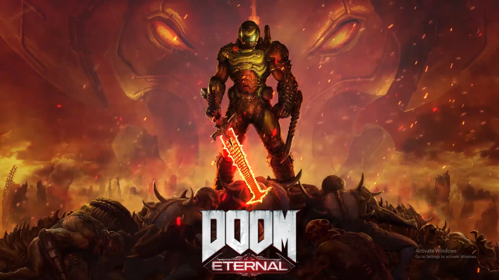

Video Games
Video Games have become many people's escape from being quarantined. Being able to live the life of a virtual character and unfold their story has helped many with the boredom they feel at home. Below are some games which fall under certain categories that explain what they are or who they are best meant for.
Creative
Dreams
Dreams is an extraordinary, ever-expanding game universe from the award-winning Media Molecule, creators of LittleBigPlanet and Tearaway, where you can discover community-made games from around the world…and learn to make your own. The latest evolution of the studio’s Play, Create, Share maxim, Dreams gives you the opportunity to unleash your creativity. Bring your ideas to life with innovative, easy-to-use tools, then share them with a global community. Whether you want to create games, music, paintings, animation, sculpture, movies or anything in-between, Dreams is an extraordinary digital playground where anything is possible.
Minecraft
Minecraft is a Lego style adventure game which has massively increased in popularity since it was released two years ago. It now has more than 33 million users worldwide. The video game puts players in a randomly-generated world where they can create their own structures and contraptions out of textured cubes.
VR Owners
Half-Life Alyx

Half-Life: Alyx is a 2020 virtual reality (VR) first-person shooter developed and published by Valve. Set between the events of Half-Life (1998) and Half-Life 2 (2004), players control Alyx Vance on a mission to seize a superweapon belonging to the alien Combine. ... It has been cited by some as VR's first killer app.
Distanced
Moving Out
Moving Out is a fun physics-based moving simulator that brings new meaning to “couch co-op”! Are you ready for an exciting career in furniture? As a newly certified Furniture Arrangement & Relocation Technician, you'll take on moving jobs all across the busy town of Packmore.
Nostalgic
Final Fantasy 7 Remake
Players control Cloud Strife, a former Shinra soldier turned mercenary who joins the eco-terrorist group AVALANCHE to fight the Shinra Corporation, who have been draining the planet's life energy.
Time-Killer
Animal Crossing: New Horizons

In Animal Crossing, the player character is a human who lives in a village inhabited by various anthropomorphic animals, carrying out various activities such as fishing, bug catching, and fossil hunting.
Gore/Action
Doom Eternal
Hell’s armies have invaded Earth. Become the Slayer in an epic single-player campaign to conquer demons across dimensions and stop the final destruction of humanity. The only thing they fear... is you.
Hardcore
Nioh 2

Nioh 2 is an action role-playing game. Players can create their own playable character, who was a yōkai spirit. ... When players defeat a hostile yōkai, some of them may drop a "Soul Core". They allow players to use yōkai abilities and transform into a yōkai after being deposited in a shrine.
Long Hours
Red Dead Redemption 2
Set in a fictional recreation of the American Old West in 1899, Red Dead Redemption 2 focuses on the life of Arthur Morgan and his position in the notorious Van der Linde gang. The game follows the gang's decline as they are pursued by lawmen, fellow gangs and Pinkerton agents.
Free Games
Warframe
Warframe is a free-to-play action role playing third-person shooter multiplayer online game developed and published by Digital Extremes. ... The game includes elements of shooting and melee games, parkour, and role-playing to allow players to advance their Tenno with improved gear.
Forza Motorsport 6
Forza Motorsport 6: Apex delivers a focused and curated single-player tour of Forza Motorsport's best content, including authentic wheel-to-wheel action, unique automotive experiences, and constant rewards, all running on DirectX 12 at resolutions up to 4K.
Dauntless
Dauntless is a free-to-play co-op ARPG where players hunt monstrous beasts called Behemoths to prevent the destruction of the world. Join arms with up to four people, and defeat Behemoths for various rewards. Pros: +Extensive weapon & armor upgrade system. +Four player co-op hunts.
RuneScape
RuneScape, sometimes referred to as RuneScape 3, is a fantasy massively multiplayer online role-playing game (MMORPG) developed and published by Jagex, first released in January 2001. ... RuneScape takes place in the world of Gielinor, a medieval fantasy realm divided into different kingdoms, regions, and cities.
Fortnite
Fortnite is a survival game where 100 players fight against each other in player versus player combat to be the last one standing. It is a fast-paced, action-packed game, not unlike The Hunger Games, where strategic thinking is a must in order to survive. There are an estimated 125 million players on Fortnite.